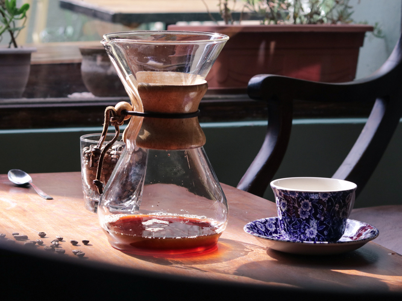
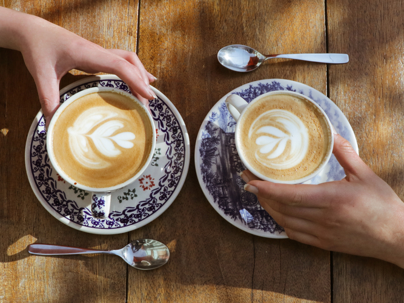
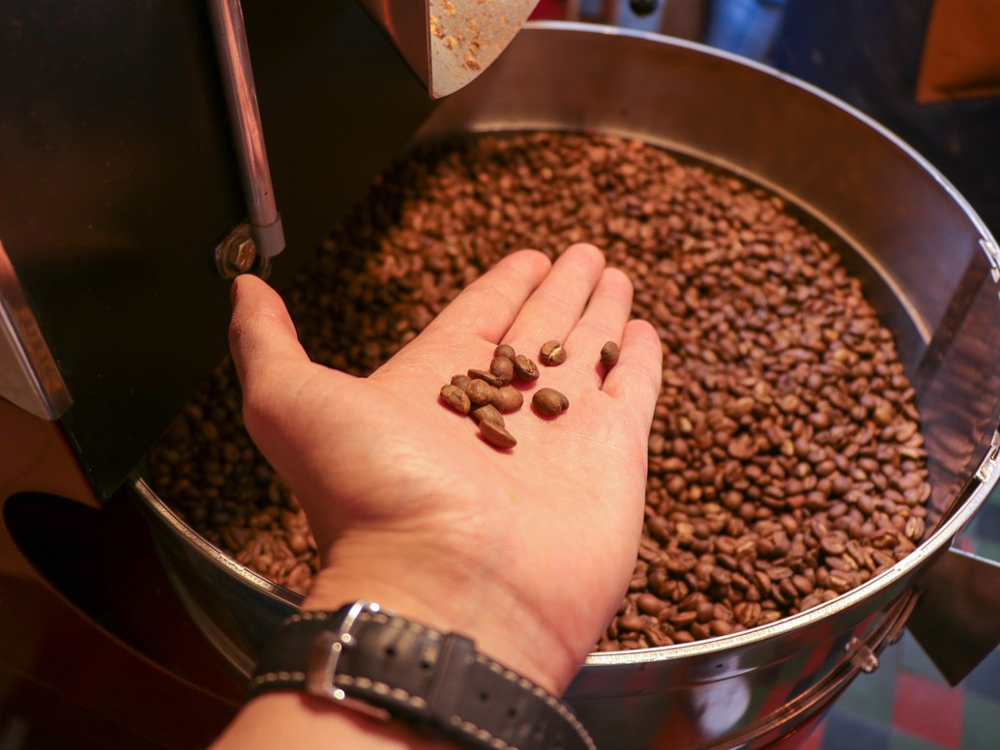

TYPICA
Orgullo Boliviano

Nuestros Productos
¡Ve lo que tenemos para ofrecerte en nuestro menú!

Academia Typica
Ver cursos y certificaciónes

Tostaduría
Aprende un poco del proceso de nuestra café